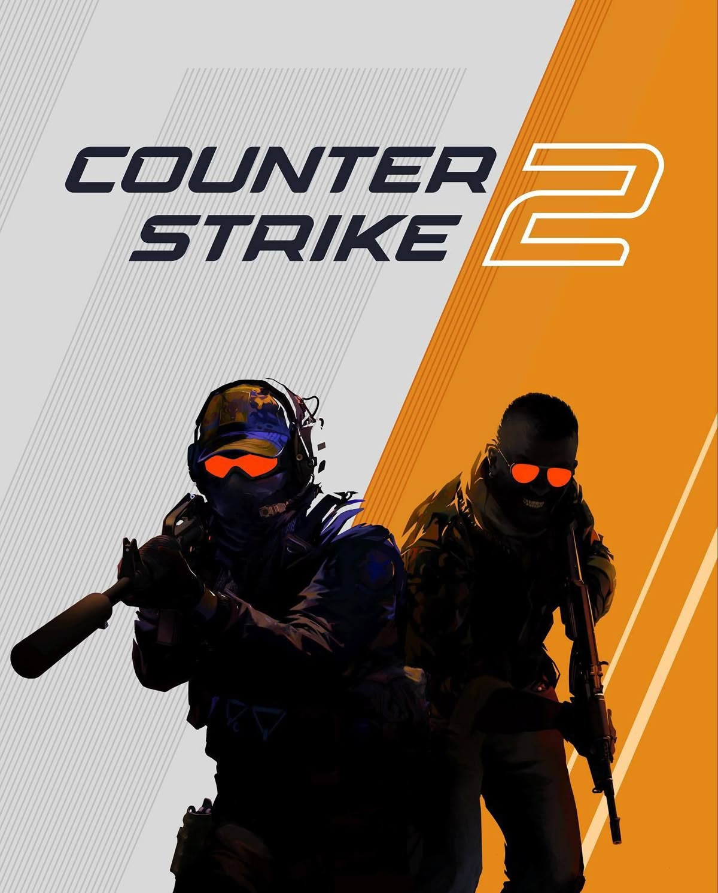

O que são shooters
São jogos em que o combate é baseado em armas e tiros, em primeira ou terceira pessoa, com foco em mira, reflexo e posicionamento.
Seu ponto de apoio no mundo dos games
São jogos em que o combate é baseado em armas e tiros, em primeira ou terceira pessoa, com foco em mira, reflexo e posicionamento.
Muitos shooters são jogados online em times, exigindo comunicação, estratégia e conhecimento dos mapas.
Ajuste a sensibilidade do mouse, treine a mira em modos de prática e aprenda os mapas e as habilidades de cada personagem.
Shooter tático em primeira pessoa, em equipes de 5 jogadores, que combina tiroteio com habilidades únicas de cada agente.

Shooter competitivo em que terroristas e antiterroristas se enfrentam em rodadas, com foco em economia, mira e estratégia.
Shooter de heróis em equipe, em terceira pessoa, com personagens da Marvel e partidas rápidas e cheias de habilidades.